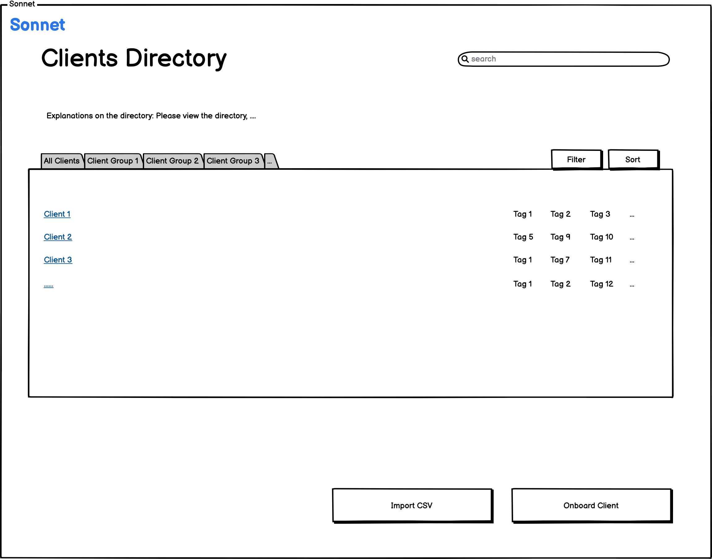
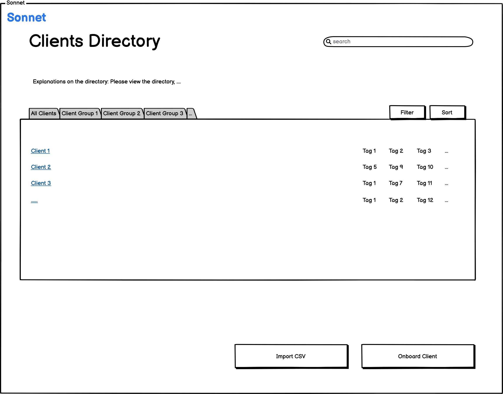

Project Overview
Sonnet AI is a startup that aims to improve the process of writing sales and marketing emails by leveraging advances in Artificial Intelligence, specifically language modeling. Sonnet’s product automates the process of writing personalized sales emails by populating elements with relevant information tailored to individual clients.
The Problem
Iterative design is a process that involves going back and forth from idea to final product and refining as necessary. Before we began sketching interfaces for our Sonnet application we decided as a group that a browser web application would be the most effective interface. The intended users for this application are sales representatives in a wide range of industries. For these users we want to provide a comfortable and familiar experience to the email applications that they use in their daily life. With this in mind we designed the Sonnet interfaces to provide structure in the form of well structured directories, client tags, familiar email interfaces, etc. to help facilitate their navigation throughout the application, while providing them the added value of AI assistance to help them draft sales emails more quickly.

 


Design Approach
Now that we have laid the foundations in the previous steps now we are able to build off the wireframe developed and build a full-on high fidelity prototype using Figma, and subject it to a round of critiques. We then improved the interface by incorporating the feedback from critiques.

Lessons learned
I learned the critical steps in the iterative design process, incorporating different design thinking from sketches to mockups to user testing. The project was helpful to me in numerous ways. It opened my mind to how user feedback through mockups and user testing can help to improve the interface. I also learned critical thinking through the process.